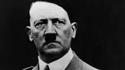

Germania nazistă, Germania național-socialistă, Germania hitleristă, Germania fascistă și al Treilea Reich (al Treilea Imperiu, Imperiul German 1933-1945) desemnează statul german în perioada anilor 1933 - 1945, când țara a stat sub controlul ferm al partidului totalitar nazist NSDAP - Partidului Muncitoresc German Național-Socialist - și a fost condusă de regimul dictatorial al liderului nazist, Adolf Hitler, denumit de germani, în acea perioadă, „der Führer”, în traducere „Conducătorul”.
„Al Treilea Reich” este traducerea termenului german Drittes Reich și este folosit ca sinonim pentru Germania nazistă. Termenul se referă mai mult la statul nazist și guvernarea lui monopartită decât la țara și poporul ei. Termenul a fost folosit pentru prima oară în 1922, ca titlu de carte, de către scriitorul conservator Arthur Moeller van den Bruck. A fost adoptat de propaganda nazistă, care considera Sfântul Imperiu Roman de Națiune Germană ca primul Reich, Imperiul German dintre anii 1871–1918 ca pe cel de-al doilea, și propriul lor regim ca pe cel de-al treilea. Numerotare a fost făcută și pentru a sugera reîntoarcerea la vechea glorie germană, odată cu abolirea Republicii de la Weimar din 1919-1933. Cucerirea puterii de către naziști a fost un proces complex.
După izbucnirea Primului Război Mondial, Hitler s-a înrolat ca voluntar în armata germană.
Hitler a fost combatant pe frontul de vest, în Franța și Belgia, în regimentul bavarez Reserve, în calitate de furier al regimentului.A fost prezent la un număr de bătălii majore, între care prima bătălie de la Ypres, Bătălia de pe Somme, Bătălia de la Arras și Bătălia de la Passchendaele. Hitler a fost de două ori decorat pentru vitejie. A primit Crucea de Fier de clasa a doua în 1914 și Crucea de Fier de clasa întâi pe 4 august 1918 - o decorație acordată foarte rar pentru un militar cu gradul de caporal (Gefreiter). Pe 18 mai 1918, el a primit Insigna „Pentru rănile suferite” (Verwundetenabzeichen). Întrucât comandanții regimentului au considerat că nu avea abilități de conducere, Hitler nu a fost promovat la rangul de Unteroffizier („subofițer”).
Sarcinile lui Hitler la sediul central al regimentului i-au permis răgazuri pentru desen și pictură. A avut contribuții grafice, de ilustrator, pentru o gazetă militară. În octombrie 1916, Hitler a fost rănit în coapsa stângă, în timpul bătăliei de pe Somme. El a petrecut două luni în spitalul din Beelitz și s-a reîntors pe front pe 5 martie 1917.Pe 15 octombrie 1918, a fost orbit temporar de un atac cu iperită (gaz muștar) și a fost spitalizat în Pasewalk. În timp ce se afla aici, Hitler a aflat despre înfrângerea Germaniei, care l-a șocat.
Hitler a descris războiul drept „cea mai mare experință a sa” și a fost lăudat de ofițerii săi pentru vitejie.
Amarul înfrângerii în război a început să-i modeleze ideologia lui. Ca și alți naționaliști germani, el credea în Dolchstoßlegende (mitul cuțitului înfipt în spate), care susținea că armata germană "neînvinsă în câmpul de luptă", a fost „înjunghiată în spate” de marxiști și civili, mai târziu numiți „criminalii din noiembrie”.
Tratatul de la Versailles stipula că Germania urma să renunțe la mai multe din teritoriile sale și să demilitarizeze Renania. Tratatul a impus sancțiuni economice și a perceput reparații grele de război pentru țară. Mulți germani au perceput tratatul ca o umilire, în special articolul 231, care declara Germania responsabilă pentru război. Tratatul de la Versailles și condițiile economice, sociale și politice din Germania de după război au fost ulterior exploatate de Hitler cu scop politic.
După război, Hitler și-a schițat în minte ceea ce urma să devină național-socialismul. O gândire bazată pe un antisemitism virulent și o concepție rasistă despre societate și a valorilor ei (Volksgemeinschaft, „comunitatea etnică”). În 1919, era agent al departamentului politic al armatei bavareze, din însărcinarea căruia a intrat în contact cu o formațiune politică radicală, obscură, numită Partidul Muncitoresc German (Deutsche Arbeiterpartei,, abreviat DAP). Partidul era, în ciuda numelui, de extremă dreaptă, ultranaționalist, antisemit și anticapitalist. Hitler s-a înregimentat politic, devenind după câteva zile membru al comitetului executiv. Energia și talentul oratoric l-au impus, încât Hitler, alături de fondatorul partidului, Anton Drexler, a formulat programul politic în februarie 1922. A fost decisă totodată adoptarea unui nume nou: Partidului Muncitoresc German Național-Socialist (Nationalsozialistische Deutsche Arbeiterpartei, abreviat NSDAP), uzual numit partid nazist. Astfel s-a deschis drumul ascensiunii spre putere al lui Hitler.
Între 8-9 noiembrie 1923 Adolf Hitler a încercat, sprijinit de o grupă de susținători, să ajungă în fruntea Germaniei printr-o lovitură de stat. Această tentativă nereușită a rămas in istorie sub numele de "Puciul de la berărie", din pricina faptului că principalii complotiști au pus la cale planul în berăria Bürgerbräukeller din München. Puciul (eșuat) a fost inspirat de „Marșul asupra Romei”, reușit de Benito Mussolini în Italia (octombrie 1922). Arestat (împreuna cu alți complici) la 11 noiembrie 1923, Hitler a fost judecat pentru trădare și condamnat la cinci ani detențiune, dintre care a executat însă numai nouă luni în închisoarea din Landsberg am Lech, Bavaria. Aici a scris celebra sa carte "Mein Kampf".
Hitler admirase de mult timp Germania și, în timpul primei conflagrații mondiale, a devenit un naționalist german. Cetățenia germană a obținut-o însă abia în 1932. A fost elogiat pentru vitejie pe front de comandantul său. Capitularea Germaniei în noiembrie 1918 a reprezentat pentru Hitler, ca și pentru cercuri largi germane de orientare conservatoare și ultraconservatoare, un șoc. Aidoma multor naționaliști, Hitler a crezut ferm în „legenda înjunghierii pe la spate” (Dolchstoßlegende), care, în esență, acredita ideea că acea capitulare ar fi fost opera forțelor politice de stânga, de orientare marxistă. În jargonul extremiștilor de dreapta, precum și al lui Hitler și al național-socialiștilor (naziștilor), oamenii politici germani care s-au decis pentru capitulare în Primul Război Mondial și pentru abolirea monarhiei în Germania, îndeosebi social-democrații, au fost porecliți „criminalii din Noiembrie” (Novemberverbrecher).

Cuceririle naziste în Europa pe durata celui de-al Doilea Război Mondial.
Politica sa expansionistă agresivă este considerată principala cauză a izbucnirii celui de-al Doilea Război Mondial, soldat cu pierderi omenești colosale.De numele său sunt legate numeroase crime împotriva umanității, printre care punerea în aplicare a unui plan naționalist și rasist de exterminare în masă a evreilor și altor „indezirabili” din Europa, precum și lichidarea adversarilor politici din Germania. Hitler a fost ales „omul anului” în 1938 de către revista americană Time.
în 1939 acțiunile germane au dus la izbucnirea celui de-Al Doilea Război Mondial în Europa. Polonia, Franța, Danemarca, Norvegia, Belgia și Olanda au fost invadate. La început, Anglia nu a putut face mult pentru a-i ajuta aliații europeni, iar Germania a supus Marea Britanie unui bombardament aerian intens pe durata bătăliei Angliei. După invadarea Greciei și a nordului Africii, Germania a atacat Uniunea Sovietică, în 1941, și a declarat război și SUA, după atacul japonez asupra bazei navale de la Pearl Harbor, Hawaii, din același an.

Campania expansionista
În paralel cu Holocaustul, naziștii au dus o politică dură de cucerire, colonizare și exploatare a teritoriilor capturate de la Uniunea Sovietică și de la Polonia și a populației lor slave, ca parte a Generalplan Ost (Planul General pentru Est). Conform estimărilor, 20 de milioane de civili sovietici, 3 milioane de polonezi ne-evrei și 7 milioane de soldați ai Armatei Roșii au fost uciși în ceea ce rușii au numit Marele război pentru apărarea Patriei. Planul nazist era să extindă Lebensraum („spațiul vital”) german spre est, dar pretextul lor oficial era acela al apărării civilizației occidentale împotriva bolșevismului.
Al Treilea Reich
Organizarea celui de-al Treilea Reich
Conducătorii Germaniei naziste au creat un număr mare de organizații pentru a-i ajuta să rămână la putere. Au reînarmat și au întărit armata, au pus la punct un aparat al securității statului extrem de puternic și și-au creat propria armată a partidului, Waffen SS. Numind în diferite poziții din guvern numai membri ai partidului nazist NSDAP, până în 1933, guvernul german și partidul nazist au devenit, practic, una și aceeași organizație. Până în 1938, prin intermediul politicii de Gleichschaltung, instituțiile politice și administrative locale și-au pierdut orice putere și au fost subordonate liderilor naziști, cunoscuți sub numele de Gauleiter (aceștia erau liderii provinciilor, în germană Gau, conform noii împărțiri administrativ-teritoriale). Organizarea statului nazist, așa cum a fost în 1944, se prezenta astfel:
Prăbușirea celui de-al Treilea Reich Conducătorii Germaniei naziste au creat un număr mare de organizații pentru a-i ajuta să rămână la putere. Au reînarmat și au întărit armata, au pus la punct un aparat al securității statului extrem de puternic și și-au creat propria armată a partidului, Waffen SS. Numind în diferite poziții din guvern numai membri ai partidului nazist NSDAP, până în 1933, guvernul german și partidul nazist au devenit, practic, una și aceeași organizație. Până în 1938, prin intermediul politicii de Gleichschaltung, instituțiile politice și administrative locale și-au pierdut orice putere și au fost subordonate liderilor naziști, cunoscuți sub numele de Gauleiter (aceștia erau liderii provinciilor, în germană Gau, conform noii împărțiri administrativ-teritoriale). Organizarea statului nazist, așa cum a fost în 1944, se prezenta astfel:
Șeful statului și al guvernului :
- Führer und Reichskanzler - Adolf Hitler
Guvernul și autoritățile federale :
- Biroul Cancelariei Reich-ului condus de Hans Lammers
- Biroul Cancelariei Partidului condus de Martin Bormann
- Biroul Cancelariei Prezidențiale condus de Otto Meissner)
- Consiliul cabinetului privat condus de Konstantin von Neurath
- Cancelaria führerului condusă de (Philip Bouhler)
Armata, Wehrmacht
- Oberkommando der Wehrmacht (OKW) : Înaltul comandament al forțelor armate Șeful Comandamentului suprem al forțelor armate : Generalfeldmarschall Wilhelm Keitel Șeful Marelui stat major : Alfred Jodl
- Oberkommando des Heeres (OKH) : Marele stat major Comandanții Armatei : Generaloberst Werner von Fritsch (1935 – 1938) General feldmarschall : Walther von Brauchitsch (1938 – 1941) Führer și Reichskanzler : Adolf Hitler (1941 – 1945) General feldmarschall : Ferdinand Schörner (1945)
- Oberkommando der Marine (OKM) : Marele stat major al Marinei Comandanții Marinei : Großadmiral Erich Raeder (1928 – 1943) Großadmiral Karl Dönitz (1943 – 1945) General admiral Hans-Georg von Friedeburg (1945)
- Oberkommando der Luftwaffe (OKL) — Marele stat major al Aviației Comandanții Aviației : Reichsmarschall Hermann Göring (până în 1945) General feldmarschall Robert Ritter von Greim (1945)
- das Heer : Armata de uscat : die Luftwaffe : Aviația de război Reichsluftschutzbund : Aviația partidului nazist – Rezerva auxiliară die Kriegsmarine : Marina de război Abwehr : Spionaj și Contraspionaj
Împingerea Germaniei în război a fost, de fapt, primul semn al începutului sfârșitului lui Hitler.
Cu toate victoriile remarcabile de început dintre anii 1939-1941, Hitler și conducerea militară a Germaniei au făcut marea greșeală de a-și subestima inamicii, Marea Britanie și Uniunea Sovietică, precum și greșeala de a începe un război pe două fronturi cu aceste două puteri.
Orbit de succesele înregistrate de „războiul fulger” (Blitzkrieg), Hitler a dat semnalul Operațiunii Barbarossa, care prevedea invadarea Uniunii Sovietice printr-o campanie rapidă, înainte de venirea iernii.
Invazia a început la 22 iunie 1 941. Hitler primește o nouă lovitură în luna decembrie a aceluiași an prin intrarea în război a Statelor Unite ale Americii. Înverșunarea sovieticilor, noroiul, apoi nămeții și frigul iernii au oprit înaintarea Germaniei.
Hitler a rămas convins că victoria finală era posibilă, ceea ce dovedește că-și pierduse clarviziunea militară ce îl caracterizase la începutul războiului. În 1943, armata germană se afla în defensivă, pierzând inițiativa și, treptat, toate visurile lui Hitler s-au sfârșit, lăsând în urmă o Europă distrusă și cincizeci de milioane de victime.